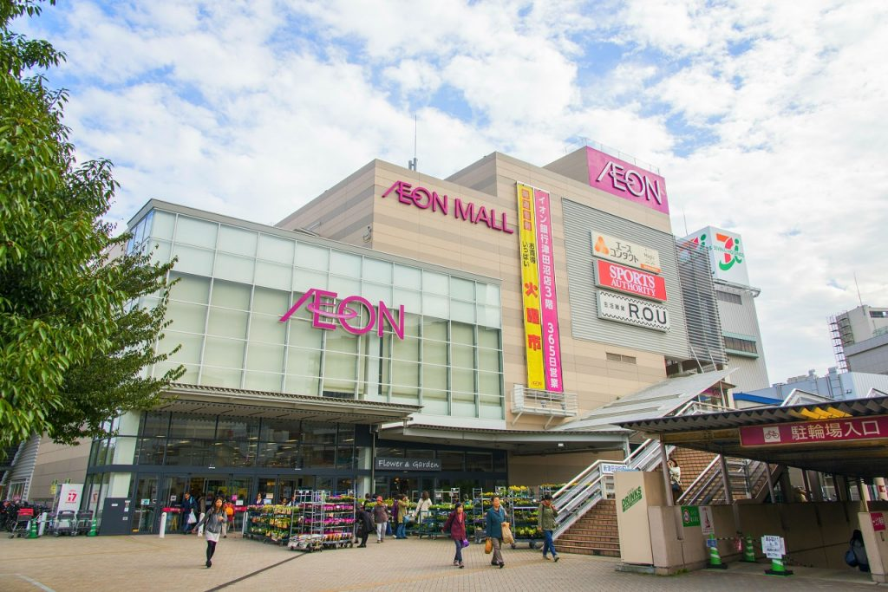
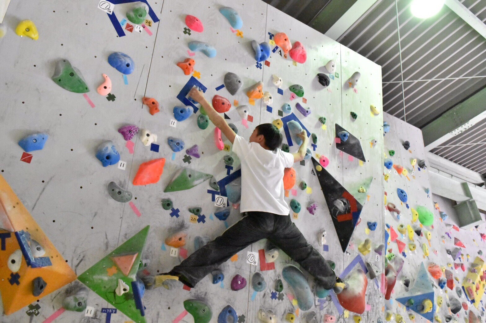

津田沼の魅力
～住みやすい街 津田沼～

大型のショッピングモール施設
イオンやイトーヨーカドー、PARCOやMorisiaなど数多くのショッピングモールがあります。
幅広い世代のファッションが揃う洋服屋さんや、子供が楽しめるショップ、生活必需品、趣味のグッズなどもチェックできます。グルメも充実で、一日中お買いものが満喫できます。

遊べるスポット
津田沼駅の周辺にはカラオケやゲームセンター、スポーツバーやボルダリング施設があります。
未就学児でも安心して遊べるスペースから、大人が夜から遊ぼうと思った時でも開いている楽しいスポットまで、バラエティーに富んでいます。

アクセスしやすい交通機関
津田沼は交通機関が発達しており、JR中央線・総武線（各駅停車）、JR横須賀線、東京メトロ東西線、JR成田線が直通運転しており、横浜方面から成田まで幅広くアクセスが可能です。また、京成津田沼駅があり京成電鉄と新京成電鉄が通っています。
始発電車があるので、座って通勤することもでき、主要都市へ乗り換えなしでアクセスできるのも大きな魅力です。